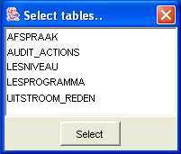

To begin creating entities, you can either select Edit > Add > entity from the menu or click the entity button on the toolbar.
|
In order to create entities, JAG must first be connected to the application database.
Once connected you will be presented with a select tables dialogue where you can select the table (or multiple tables using SHIFT-click) that you want to convert into entities. Once you have completed the table selection, JAG will inspect the database and create the appropriate entity. You will see the entities appear in the application tree view in the left-hand panel as they are created. |  |
|
You can browse a generated entities by selecting it in the tree view: an entity will 'open' to reveal its constituent
fields and relations. Fields and relations may be deleted by selecting Edit > Delete from the menu, by typing Ctrl-Delete, or by clicking on in the toolbar. Additional relations may also be added to the entity with Edit > Add > relation, Ctrl-R or by clicking in the toolbar. |
Clicking on an entity or one of its constitutent parts will open up a configuration screen in the right-hand panel. The following pages describe these configuration screens in detail:
| Previous step: Application configuration |
| Next step: Creating services |